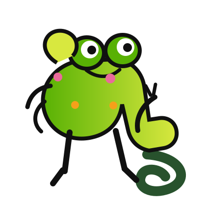
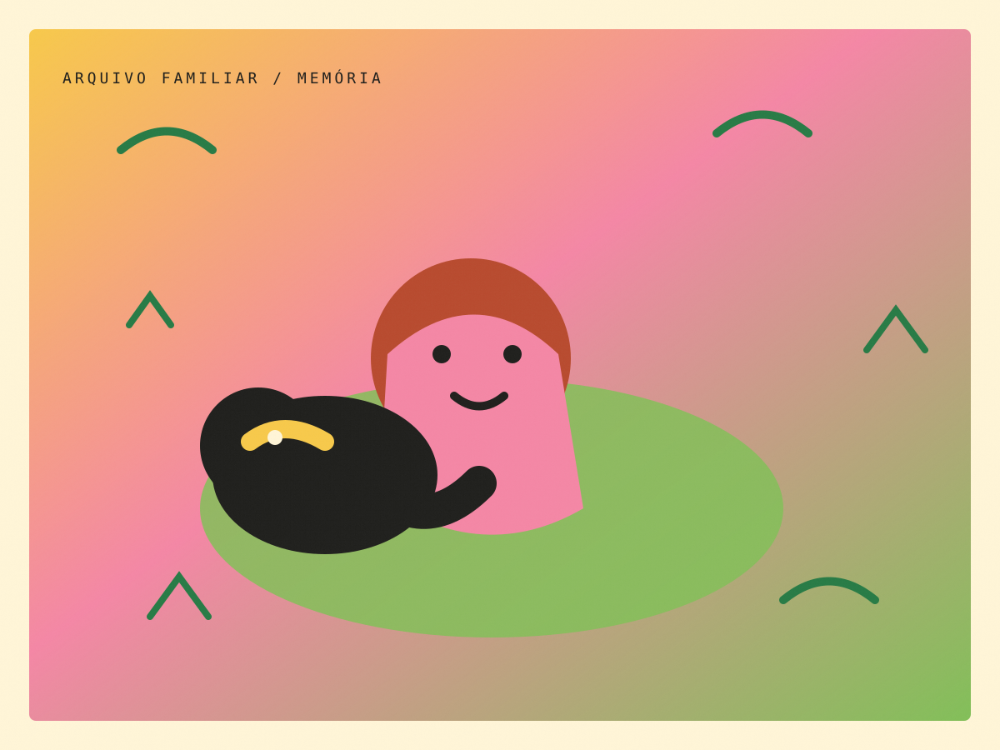

“Como eu era nessa época?”
Espaço reservado para a memória de um familiar. O relato entra antes da releitura teórica.

ZecaJuliana, o Zeca separou três opções. A escolha fica aqui no cantinho enquanto você navega.

ARQUIVO 01Juliana, você está Prates a conhecer minha história.
Se eu não consigo lembrar de tudo,
quem pode contar quem eu fui?
Eu não lembro
de tudo.
Mas algumas pessoas
lembram.
Este portfólio parte de fotografias, relatos e memórias para reconstruir quatro momentos da minha infância — e, ao longo da disciplina, olhar novamente para essas experiências através da Psicologia do Desenvolvimento.
Há imagens que não funcionam apenas como registro. Elas são pistas para reconstruir uma história que eu próprio não consigo lembrar inteira.
O arquivo vai ganhar relatos, sons, imagens e as lembranças de quem estava lá.
Espaço reservado para a memória de um familiar. O relato entra antes da releitura teórica.
Depois das leituras, esta área recebe os conceitos da disciplina que ajudarem a interpretar esta lembrança.
CONTEÚDO EM CONSTRUÇÃO